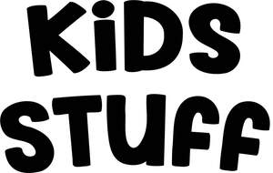

Trade Mark Journal No.2025/048 28 November 2025
UK00004291135 7 November 2025 (3,5)
Mark 1

Mark 2
- Class 3
- Cleaning preparations; bath soaps; bar soap; perfumery; essential oils; cosmetics; hair lotions; dentifrices; non-medicated toiletry preparations; non-medicated skin care preparations, namely, creams, lotions, gels and cleaners; hair care preparations; teeth whitening preparations; tooth cleaning preparations; soap powder; paper soaps for personal use; skin soap; body cream soaps; non-medicated face soap; hand lotion; body lotion; hand moisturisers; skin moisturisers; facial moisturisers; body moisturisers; hair moisturisers in the nature of hair emollients; skin moisturizers used as cosmetics; bath and shower gels; personal deodorants; hair shampoo; hair conditioner; hair styling preparations; toothpaste; preparations for the skin, namely, non-medicated skin care preparations; beauty creams for body care; cleaning preparations in the form of foam; foam non-medicated skin soap; bath foam; foaming cleaning preparations; cleaning preparations in the form of body paint; body paint non-medicated skin soap; body lotion; bubble bath; cleaning preparations for children; skin cleansers for children; non-medicated toiletry preparations for children; hand cleaning preparations; surface cleaning preparations; wipes impregnated with cleaning preparations; wipes impregnated with a skin cleanser; toiletry products for children.
- Class 5
- Antibacterial skin soap; disinfectant soap; sanitising wipes; impregnated antiseptic wipes; antibacterial wipes; disinfectants; alcohol-based antibacterial skin sanitizer gels.
HOTHOUSE BEAUTY LIMITED
Representative: Squire Patton Boggs (UK) LLP